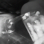
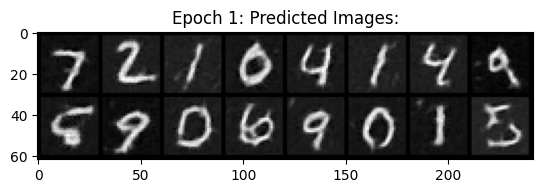

Part A: The Power of Diffusion Models
In this part, we write our own sampling loops using the DeepFloyd IF diffusion model to denoise input images, and generate new images, including image-to-image translations, inpainting/edits, visual anagrams, and hybrid images.
Sampling Loops
Implementing the Forward Process
We first begin by implementing the forward process for our diffusion model, which takes in a clean image, and scales and denoises it.
| Original Image | Noise Level 250 | Noise Level 500 | Noise Level 750 |
|---|---|---|---|
 |
Classical Denoising
We first try to denoise the image via Gaussian blurring:
| Original Image | Noise Level 250 | Noise Level 500 | Noise Level 750 |
|---|---|---|---|
|
One-Step Denoising
We now use the pre-trained diffusion model to denoise the image with text conditioning, using the prompt embedding "a high quality photo".
| Original Image | One-Step Denoise at Level 250 | One-Step Denoise at Level 500 | One-Step Denoise at Level 750 |
|---|---|---|---|
|
Iterative Denoising
We now iteravely denoise the image with strided timesteps, starting from 1000 iterations and using a stride of 30.
| Original Image | Noise Level 90 | Noise Level 240 | Noise Level 540 | Noise Level 690 |
|---|---|---|---|---|
|
| Original Image | Iteratively Denoised Image | One-Step Denoised Campanile | Gaussian Blurred Campanile |
|---|---|---|---|
|
 |
Diffusion Model Sampling
We now show use iterave denoising to generate images from pure noise. Below are some results:
| Sample 1 | Sample 2 | Sample 3 | Sample 4 | Sample 5 |
|---|---|---|---|---|
|  |
Classifier-Free Guidance (CFG)
In order to generate better quality images, we implement classifier-free guidance, with a null prompt for the unconditional guidance for CFG.
| Sample 1 with CFG | Sample 2 with CFG | Sample 3 with CFG | Sample 4 with CFG | Sample 5 with CFG |
|---|---|---|---|---|
Image-to-image Translation
For this part, we will take the original image of the Campanille, add noise to it, and then denoise it using iterative CFG, with differing levels of noise. This will function as a way to "edit" the original image.
| SDEdit with i_start=1 | SDEdit with i_start=3 | SDEdit with i_start=5 | SDEdit with i_start=7 | SDEdit with i_start=10 | SDEdit with i_start=20 | Original Image |
|---|---|---|---|---|---|---|
|
| SDEdit with i_start=1 | SDEdit with i_start=3 | SDEdit with i_start=5 | SDEdit with i_start=7 | SDEdit with i_start=10 | SDEdit with i_start=20 | Original Image |
|---|---|---|---|---|---|---|
| SDEdit with i_start=1 | SDEdit with i_start=3 | SDEdit with i_start=5 | SDEdit with i_start=7 | SDEdit with i_start=10 | SDEdit with i_start=20 | Original Image |
|---|---|---|---|---|---|---|
Editing Hand-Drawn and Web Images
We can also apply this process with hand-drawn images, such as the results below:
| SDEdit with i_start=1 | SDEdit with i_start=3 | SDEdit with i_start=5 | SDEdit with i_start=7 | SDEdit with i_start=10 | SDEdit with i_start=20 | Original Image |
|---|---|---|---|---|---|---|
| SDEdit with i_start=1 | SDEdit with i_start=3 | SDEdit with i_start=5 | SDEdit with i_start=7 | SDEdit with i_start=10 | SDEdit with i_start=20 | Original Image |
|---|---|---|---|---|---|---|
 |
| SDEdit with i_start=1 | SDEdit with i_start=3 | SDEdit with i_start=5 | SDEdit with i_start=7 | SDEdit with i_start=10 | SDEdit with i_start=20 | Original Image |
|---|---|---|---|---|---|---|
 |
Inpainting
We can use the same procedure to implement inpainting by taking advantage of image masks. Below are some results:
| Original Image | Mask | Hole to Fill | Image Inpainted |
|---|---|---|---|
|
 |
 |
| Original Image | Mask | Hole to Fill | Image Inpainted |
|---|---|---|---|
Text-Conditional Image-to-image Translation
We will now return to image-to-image translation, except now we will guide the model with custom embedded prompts, rather than simply "a high-quality photo". Below are some results:
"A rocket ship" with an image of the Campanille:
| SDEdit with i_start=1 | SDEdit with i_start=3 | SDEdit with i_start=5 | SDEdit with i_start=7 | SDEdit with i_start=10 | SDEdit with i_start=20 | Original Image |
|---|---|---|---|---|---|---|
|
"An oil-painting of a snowy village" and a hand-drawn thumbnail of a hill:
| SDEdit with i_start=1 | SDEdit with i_start=3 | SDEdit with i_start=5 | SDEdit with i_start=7 | SDEdit with i_start=10 | SDEdit with i_start=20 | Original Image |
|---|---|---|---|---|---|---|
 |
|
| SDEdit with i_start=1 | SDEdit with i_start=3 | SDEdit with i_start=5 | SDEdit with i_start=7 | SDEdit with i_start=10 | SDEdit with i_start=20 | Original Image |
|---|---|---|---|---|---|---|
 |
 |
Visual Anagrams
Now, we will alter our current model to generate visual anagrams, where given two prompts, one prompt is visible when the image is rightside-up, and the other prompt is visible when the image is upside-down. Below are some results:
| "An Oil Painting of People Around a Campfire" | An Oil Painting of an Old Man |
|---|---|
| "An Oil Painting of an Old Man" | "An Oil Painting of a Snowy Mountain Village" |
|---|---|
| "An Oil Painting of People Around a Campfire" | "An Oil Painting of a Snowy Mountain Village" |
|---|---|
 |
Hybrid Images
Finally, we will alter the model so that it can generate hybrid images, where an image appears to be one prompt from up close, and another from far away. Below are some results:
| "A Lithograph of a waterfall" | "An Oil Painting of People Around a Campfire" | "An Oil Painting of a Snowy Mountain Village" |
|---|---|---|
| "A Lithograph of a Skull" | "A Lithograph of a Skull" | "An Oil Painting of an Old Man" |
Diffusion Models From Scratch!
In this part, we write our own sampling loops using the DeepFloyd IF diffusion model to denoise input images, and generate new images, including image-to-image translations, inpainting/edits, visual anagrams, and hybrid images.
Training a Single-Step Diffusion Model
Implementing the UNet
We begin by setting up our unconditional U-Net based off of the following architecture, with the operations defined as below:


Using the UNet to Train a Denoiser
Once we have our U-Net set up, we can set out to solve the denoising problem, where we attempt to denoise images with certain levels of noise.
We aim to denoise the MNIST dataset. We use the following equation to noise images, where z is our noisy image, x is our original image, epsilon is Gaussian-distributed random noise, and sigma is a scalar that determines how much noise to add.
Pictured below is the noising process on sigmas in the following range: 0, 0.2, 0.4, 0.5, 0.6, 0.8, 1.0.
Training
We now train the U-Net to denoise images with sigma=0.5. We use a batch size of 256, 128 hidden dimensions, and train for 5 epochs.
Below is the loss curve, along with some results at epochs 1 and 5 respectively.
|  |
Out-of-Distribution Testing
We now see how well the model works to denoise images with sigmas other than 0.5. Below are some results, with denoising results from noised images with the following sigma values in the following range: 0, 0.2, 0.4, 0.5, 0.6, 0.8, 1.0.
Training a Diffusion Model
Adding Time Conditioning to UNet
We will now train a U-Net to Iteratively denoise an image, implementing DDPM.
We will incorporate time-conditioning by injecting scalar t values into our U-Net using the following architecture, with new operations defined as below:


Training the UNet
We will now train the U-Net with respect to the following algorithm:

We train for 20 epochs, with a batch size of 128, 64 hidden channels, using MSE loss with an Adam optimizer with a learning rate of 1e-3. We also use a exponential learning rate decay scheduler, with a gamma of 0.1 ^ (1 / epochs). Pictured below is the training loss curve for the model:
Sampling from the UNet
Once the U-Net is trained, we can sample from it in accordance with the algorithm below:

We train for 20 epochs, with a batch size of 128, 64 hidden channels, using MSE loss with an Adam optimizer with a learning rate of 1e-3. Pictured below is the training loss curve for the model:
Below are some results from sampling the model at epochs 5 and 20, respectively.
Adding Class-Conditioning to UNet
To improve our results and allow for more control for image generation, we add class conditioning to the model. In this case, we will condition the U-Net on the classes 0 through 9 (one class per digit).
This requires adding in two more fully connected blocks to our architecture to accomodate c, which can either be a single label or a vector of labels (which will be one-hot encoded). We apply dropout to the c vector, with a rate of 0.1.
The training algorithm is similar to the one seen in time-conditioning, except we take the labels into consideration.

We keep the same parameters for training. Below is the loss curve for the model across 20 epochs:
Sampling from the Class-Conditioned UNet
We now sample from the model, using classifier-free guidance with a gamma value of 0.5.
Pictured below is the algorithm used for sampling:

Pictured below are results from sampling at epochs 5 and 20 respectively.